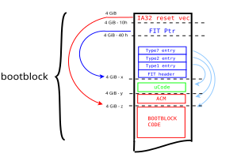

Intel Firmware Interface Table
The FIT allows to run code before the actual IA32 reset vector is executed
by the CPU. The FIT resides in the BIOS region (usually near the reset vector)
and is pointed to by the FIT pointer residing at 0xFFFFFFC0.
Table layout
The table consists of blocks each 16 bytes in size. The first is called FIT header the other are called FIT entry.

Fit types
Each entry has a type that give the other bits in the entry a different meaning. The following types are known:
no. |
Description |
|---|---|
0x0 |
HEADER. |
0x1 |
MICROCODE. |
0x2 |
STARTUP_ACM. |
0x7 |
BIOS_STARTUP_MODULE. |
0x8 |
TPM_POLICY. |
0x9 |
BIOS_POLICY. |
0xa |
TXT_POLICY. |
0xb |
KEY_MANIFEST. |
0xc |
BOOT_POLICY_MANIFEST. |
0x10 |
CSE_SECURE_BOOT. |
0x2d |
TXTSX_POLICY. |
0x2f |
JMP_DEBUG_POLICY. |
0x7f |
SKIP. |
Usage in coreboot
The most common usage of FIT is to use Type1 to update microcode before execution of the IA32 reset vector happens.